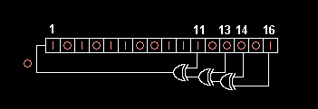

Diese Hilfedatei beschreibt LFSR-Chiffren im Allgemeinen. Eine Beschreibung, wie man sie in JCT verwendet, finden Sie im Tutorial zur GUI: LFSR: Wie man diese Visualisierung benutzt.
Ein lineares Rückkopplungs-Schieberegister (LFSR) ist ein sequentielles Schieberegister mit kombinatorischer Logik, das Zyklen pseudozufälliger Binärfolgen erzeugt. Das Eingangsbit des Schieberegisters ist eine lineare Funktion des vorherigen Zustandes. Die am häufigsten verwendete lineare Funktion von Einzelbits ist exklusiv-oder (XOR).
Für die meisten allgemeinen Erklärungen verwendeten die Autoren den Wortlaut aus Wikipedia[1].
Der Anfangswert des LFSR wird als Seed bezeichnet, und da die Bedienung des Registers deterministisch ist, wird die Reihenfolge der vom Register erzeugten Werte vollständig durch seinen aktuellen (oder vorherigen) Zustand bestimmt. Da das Register eine endliche Anzahl möglicher Zustände aufweist, tritt es schließlich in einen sich wiederholenden Zyklus ein.
Ein LFSR mit einer gut gewählten Rückmeldefunktion kann jedoch eine zufällig erscheinende Bitfolge erzeugen, die einen sehr langen Zyklus hat. Ein nach LFSRs modelliertes Design hat oft sowohl Geschwindigkeits- als auch Anwendungsvorteile gegenüber einem funktional äquivalenten Design, das keine LFSRs verwendet.
LFSRs können auf mehr als eine Weise implementiert werden, aber dieses Dokuments konzentriert sich auf die gebräuchlichste Form – die Fibonacci-Implementierung.
Die Fibonacci-Implementierung besteht aus einem einfachen Schieberegister der Länge m. Die Bitpositionen, die den nächsten Zustand beeinflussen, werden als Taps (XOR-Gates) bezeichnet. In der folgenden Abbildung ist die Tap-Sequenz [16,14,13,11]. Die Taps werden sequentiell per XOR mit der Ausgabe verknüpft und dann in das linke Bit des Registers zurückgeführt.
Ein maximaler oder maximal-langer LFSR erzeugt eine m-Sequenz (d.h. er durchläuft alle möglichen 2^m - 1 Zustände innerhalb des Schieberegisters mit Ausnahme des Zustands, in dem alle Bits Null sind). Wären alle Zustände Nullen, würde sich nichts mehr ändern.
Die von einem LFSR erzeugte Zahlenfolge kann als Binärzahl betrachtet werden, während die Tap-Sequenz eines LFSR als Polynom mod 2 (Finite-Field-Arithmetik) dargestellt werden kann. Das bedeutet, dass die Koeffizienten des Polynoms 1 oder 0 sein müssen. Dies wird als Feedback-Polynom bezeichnet. Wenn sich die Taps beispielsweise am 16., 14., 13. und 11. Bit befinden (wie dargestellt), ist das Feedback-Polynom:

Die '1' im Polynom entspricht nicht einem Tap – es entspricht dem Input des ersten Bits (d.h. x^0, was 1 entspricht). Die Potenzen der Terme repräsentieren die getappten Bits, von links gezählt. Das erste und das letzte Bit sind immer als Eingang bzw. Tap verbunden.
Die Wahl der zu verwendeten Taps bestimmt, wie viele Werte in einer Sequenz von Pseudozufallswerten enthalten sind, bevor die Sequenz sich wiederholt. Bestimmte Tap-Einstellungen ergeben die maximale Folgen von 2^(m-1) Länge.
Die Länge einer LFSR-Sequenz vor der Wiederholung hängt von zwei Dingen ab: von den Feedback-Taps und vom Ausgangszustand. Ein LFSR einer beliebigen Größe m (Anzahl der Register) ist in der Lage, jeden möglichen Zustand während der Periodenlänge N = 2^(m-1) zu erzeugen, dies jedoch nur, wenn geeignete Feedback-Taps gewählt wurden (dies ist dann unabhängig vom Ausgangszustand). Eine solche Sequenz wird als Sequenz maximaler Länge (m-Sequenz) bezeichnet. In der Kryptografie werden m-Sequenzen als Pseudozufallsfolgen benutzt.
Wenn die Feedback-Taps eines LFSR nicht maximal sind, hängt die Länge der erzeugten Sequenz auch vom Anfangszustand des LFSR ab. Ein nicht-maximaler Generator ist in der Lage, zwei oder mehr einzigartige Sequenzen (plus die triviale Null) zu erzeugen, wobei der Anfangszustand bestimmt, welche produziert wird. Jede dieser Sequenzen wird als Zustandsraum des Generators bezeichnet. Zusammengenommen berücksichtigen alle möglichen nicht-maximalen Sequenzen alle 2^m Zustände eines m-Bit-Zustandsregisters.
Die Eigenschaften von nicht-maximalen Sequenzen sind im Allgemeinen schlechter als die von maximalen Sequenzen. Daher wird die Verwendung von nicht-maximalen Sequenzen in realen Systemen in der Regel vermieden zugunsten ihrer maximal langen Pendants.
LFSRs werden seit langem als Pseudozufallszahlengeneratoren für den Einsatz im Strom-Chiffren verwendet (insbesondere in der militärischen Kryptografie) – aufgrund der leichten Konstruktion aus einfachen elektromechanischen oder elektronischen Schaltungen, ihren langen Perioden und dem sehr gleichmäßig verteilten Output. Ein LFSR ist jedoch ein lineares System, was zu einer relativ einfachen Kryptoanalyse führt. So kann beispielsweise – bei einem Abschnitt mit bekanntem Klartext und entsprechendem Geheimtext – ein Abschnitt der im vorstehend beschriebenen System verwendeten LFSR-Ausgabe wiederhergestellt werden, und aus der Ausgabesequenz kann man mit Hilfe des Berlekamp-Massey-Algorithmus einen LFSR von minimaler Größe konstruieren, der mit der bekannten Ausgabe dazu verwendet werden kann, wie der beabsichtigte Empfänger den verbliebenen Klartextes zu erhalten.
Wichtige LFSR-basierte Stream-Chiffren sind A5/1 und A5/2 (verwendet in GSM-Handys) und E0 (verwendet in Bluetooth). Die A5/2-Chiffre wurde gebrochen, und beide, A5/1 und E0, haben schwerwiegende Schwächen.
a) 4-Bit Fibonacci-LFSR von Anne Canteaut [6], Abschnitt 3.1, Seite 44:
c = tap = 0011 seed = 1011 Die erwartete Ausgabe beginnt mit: 1011 1100 0100 0100 1101 = 0xBC4D Erwartete Ausgabe (nach der ersten Stufe): 1100 0100 0100 1101
b) 16-Bit Fibonacci-LFSR aus Wikipedia [1], siehe Abbildung 1 oben:
c = tap = 0000 0000 0000 0000 0010 1101
seed = 1010 1100 1100 1110 0001 = 0xACE1 (= 1. Belegung des LFSR-Registers)
Nächste Belegung des LFSR-Registers (nach einem Clock):
0101 0110 0111 0000 = 0x5670
Illustration (Entstehung der neuen Belegung durch Hinzufügen eines Bits am Register-Anfang):
101 0110 0111 0000 1 = 0xACE1
0 101 0110 0111 0000 = 0x5670
Erwartete Ausgabe startet mit:
0101 0110 0111 0000 = 0x5670
Die Tap-Nummern entsprechen einem primitiven Polynom, so dass das Register die maximale Anzahl aller möglichen 65535 Zustände (außer dem Null-Zustand) durchläuft. Dem Zustand 0xACE1 (hexadezimal) folgt 0x5670.